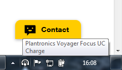

Best practices for a chatbot
Associated themes:- Advanced
- Component
Publication date
Designing an accessible chatbot
Introduction
In this article, the terms “chatbot” and “chat” refer to a dialogue window that allows you to engage in a written conversation with an operator or an artificial intelligence, sometimes also called conversational agent.
1. Brand’s guidelines
This article details a number of technical points. If the objective is to develop a chatbot for an Orange site, it is advisable at first to be familiar with the Brand recommendations on this topic, available at design.orange.com (Conversational UI guideline).
2. Go to the chatbot
Before using a chatbot, it is often necessary to make it appear by clicking on a button located in a corner of the page. The user must be able to discover that he has the chance to use a chatbot on the page he consults. This is why it is important to use a button whose label is sufficiently explicit. It depend on the context: for example, on a e-commerce site, label such as “Contact us”, or “A problem with your order?” are valid proposals.
Keyboard Navigation
It is sufficient to put a button in a corner of the page provided that it is accessible, in particular, using the keyboard only. Be sure to use a real button (<button>) in the code, as is the case on this page (contact button located at the bottom right of the page).
The two buttons below look identical when used with the mouse. However, if you try to use them when navigating with the Tab key, the second button (using a <span> tag) is not focusable. In the latter case, a user who navigates using the keyboard will not be able to open the chatbot.
Test them, using the mouse and using the keyboard:
- : focusable button (
<button>tag). - Contact: non-focusable button (
<span>tag).
Browsing with a screen magnifier
For users with a screen magnifier, it is advisable not to locate the contact button too close to the edge of the window. The screen moves caused by the use of the magnifier make the movements of the mouse pointer sometimes less accurate. If the user does not target the contact button precisely, tooltips from items displayed outside the window may obscure the button. In this case the user may not notice that a chat component is available.
In the screenshot below taken on Windows, the button is hidden by a tooltip from an item in the Windows bar:

Same example but this time with a small margin between the button and the edge of the window:

Screen reader navigation
The presence of a button to access the chatbot, in the lower right, is enough to make some users understand that a chatbot is available on the page. But, for blind or visually impaired users who are navigating with a screen reader, this may pose difficulties. Indeed, to hear this button, often placed at the end of the code, it is necessary for the user to listen to the entire page to the last line. Thus, they should listen to the whole footer generally containing many links. In reality, it is not what users do.
In this case, a visually impaired user is not aware of this button, so they are not able to access the chat.
There are several ways to avoid this problem:
- Add skip links on the page
- Use ARIA
- Use a title tag
Add skip links
Skip links provide direct access to a specific area of the page. They are inserted at the top of the page and thus, vocalized first. The presence of a skip link “skip to chat” to go directly to the chatbot will allow the user to anticipate its use. These skip links can be hidden on the screen, even if it’s not the best choice (thanks to accessible hiding).
The presence of skip links also has positive effects for people who navigate with the keyboard. For example, on the page you are currently viewing, some skip links are available. They are hidden by default and become visible when the focus is on them. To make them appear, you can click in the address bar of your browser then press the Tab key several times (to locate the focus at the beginning of the page).
Use ARIA landmarks
In addition to predefined HTML5 structure tags (main, aside, footer and header, ...), it is possible to create “custom” landmarks using the ARIA region role.
<div role="region" aria-label="chat window">
<!-- chatbot code -->
</div>
This code is used to define a “chat window” area in the page. This allows people who use a screen reader to access the chat from the list of regions. The screenshot below was obtained by displaying the list of regions from the NVDA screen reader:
So with only two little ARIA attributes, we greatly simplify navigation.
Use a title tag
According to recurring polls from WebAIM about screen reader users, landmarks are not known by everyone yet. For robustness, we can also add a heading tag (h1, h2...) before the chat.
To make this heading not visible on the screen, it is enough to use an accessible hiding class (visually-hidden). This also allows users to access the chat from the list of headings on the page.
<div role="region" aria-labelledby="tchat-title">
<h1 id="tchat-title" class="visually-hidden">Chat window</h1>
<!-- chatbot code -->
</div>
3. Chatbot accessibility
Now that everyone can access the chatbot, make sure it is accessible.
Keyboard Navigation
Regarding keyboard navigation, it is enough to check while navigating without the help of the mouse, if it is possible to click on all the buttons (Tab key to move the focus, Enter key to activate a button) and to type and send messages.
After a few exchanges in the chat, a scroll bar appears. It must also be ensured that the chat can be used with the arrow keys. This is the case natively in Firefox, but for Chrome it is necessary to make this element focusable using a tabindexattribute.
<div id="chat-content" tabindex="0">
Finally, make sure that the focus is visible when it is positioned on the element allowing to scroll the messages:
div:focus {
outline: .2rem solid #f16e00;
}
Browsing with a screen magnifier
The width of the chat window can affect the reading comfort. Indeed, if it is too wide, reading the chat with magnifying software can become tedious. Especially if the user has to scroll to read the entire line on the chat.
In the screenshot below (screen magnifier on 600%), the window is too wide, the user will have to move the visible area to the left and right to browse through the chat window:
The screenshot below was taken with the chat window visible on this page. Here, with a 600% zoom, it is possible to read the entire chat without moving the visible portion of the screen.
Navigating with a screen reader
Labelling interactive elements
Labels have been added to the input field and the send button using a title or an aria-label attribute. Thus, a visually impaired user using a screen reader will hear that it is the field to type the message to send.
<input class="text" title="Message to send" aria-label="message to send" id="chat-input" autocomplete="off" placeholder="Enter your message ... ">
<input type="submit" title="Send this message" aria-label="Send" >
The same thing must be done on the buttons to reduce and close the chat window.
Notify the user when a new message arrives
Although the received messages appear on the screen, the screen reader does not automatically read them by default.
To solve this problem, just add an aria-live attribute to tell the screen reader that it should automatically vocalize any changes to the message list.
<div id="chat-content" tabindex="0" aria-live="polite">
Identify the sender of a message
Can you identify who the sender of the message “Test message 2” is in the screenshot below?
Looking at the image above, we see that this message is aligned to the right, just go up the stack of messages aligned to the right to find the sender: “me”.
For a user who does not see the screen, it can become complicated since the sender of the message is visually inserted (rightly) only when there is a change of sender in the conversation.
To be sure, we recommended to indicate in front of each message its transmitter, useful for the users who navigate using a screen reader only (use of the accessible masking class visually-hidden).
<div class="message">
<span class="visually-hidden">
Djingo says:
</span>
message test 1
</div>
...
<div class="message">
<span class="visually-hidden">
I say:
</span>
message test 1
</div>
Note: the adopted formalism (“I say”, “Djingo says”) may sound surprising, but it allows the user who is listening to the page to have important information quickly and eventually go on without listening to the end of the sentence to save time.
Finally, to avoid having a double vocalization, the screen reader will not see the emitting person displayed at the top of a message stack, using a aria-hidden attribute.
<span class="from" aria-hidden="true">Me</span>
Sounds
The Orange Brand recommendations (Conversational UI guideline) specify the audio files to use. It is important to make a sound when sending and receiving messages. This is useful for everyone but, especially, for the visually impaired. They have confirmation that their message has been sent without needing to read the message thread for example.
Window title
To complete the audio alert, it is also important to change the title of the window when receiving a message. This allows the user who has been absent, to detect, at a glance, that a message has arrived even if it is on another tab of the browser. Similarly, for a user who navigates with a screen reader, it is very easy to access at any time the browser tab title.
This change must be made when a message arrives and the focus is not in the chat input field (focus elsewhere in the page or on another tab). Do not forget to reset the window title when the user focuses the input field again.
playSound ( "Receive_a_message");
if (!document.hasFocus() || document.activeElement !== document.getElementById('chat-input')) {
document.title = "Djingo says…" + title;
}
Interactions
Some conversations lead the chatbot to propose multiple choice options. The following button illustrates this possibility:
In this example, the user must make a choice. In this case, it is necessary to take some precautions to simplify navigation.
Focus ManagementTo simplify the keyboard navigation, rather than focusing the chat input field, the focus is moved to the text preceding the buttons. This then allows the user to navigate the first choice by pressing the Tab key once.
To locate the focus on the textual element (a <div>in this example) that is not focusable by default, it is necessary to add a tabindex="- 1" attribute, so it can receive focus via Javascript. As a reminder, this attribute can take the following values:
- tabindex = 0: the element is focusable on the keyboard (Tab key) and via Javascript.
- tabindex = -1: the element is focusable via Javascript only.
When focus is moved to an item, the screen reader automatically vocalizes it. But in our case, the aria-live attribute already allows to automatically vocalize any addition in the chat window. To avoid double vocalization in this case, make sure to temporarily disable the aria-live.
// Deactivation of aria-live (avoid double vocalization)
document.getElementById("chat-container").setAttribute("aria-live", "off");
// Displaying the question
push("Djingo", "Excellent idea ! Do you want to talk about web or mobile accessibility?", true, "poll1");
// Displaying choices
rawPush('me', '<button id="poll-web" class="btn btn-primary btn-poll">Web</button><button id="poll-mobile" class="btn btn-primary btn-poll">Mobile<button>');
// Put focus on the question (triggering of the vocalization)
document.getElementById("poll1").focus();
// Reactivation of aria-live
window.setTimeout(function() {
document.getElementById("chat-container").setAttribute("aria-live", "polite");
}, 0);
Conclusion
These recommendations have been applied to the chat available on this page. Do not hesitate to consult the code. For any comments or suggestions, create an issue on our github account.